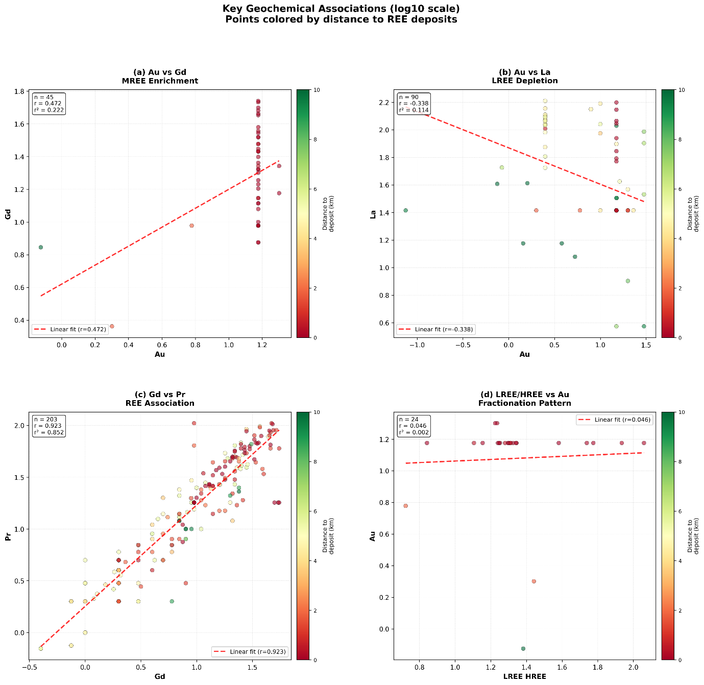
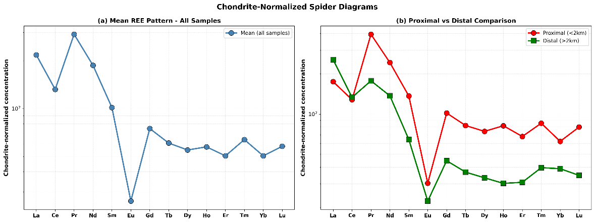
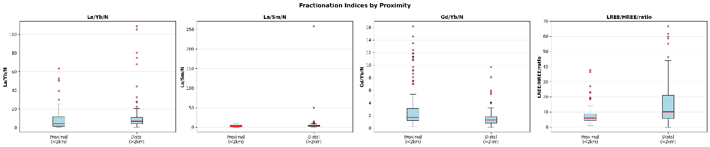

Capítulo 4 · Au-Gd r≈+0,47 · Au-La r≈−0,34 · CoDa
Los acompañantes del oro
Bivariante y composicional: el Gd acompaña, el La se aleja: fraccionamiento hidrotermal en los datos.
El oro tiene compañía, y no es la que uno esperaría. Contra el gadolinio, r = +0,472; contra el lantano, r = −0,338. Dos tierras raras, vecinas en la tabla periódica, y el oro se acerca a una y se aleja de la otra. Ese patrón asimétrico es el hallazgo central de la geoquímica bivariante, y luego el análisis composicional lo confirma por otro camino.
En este capítulo: qué mide una correlación, el bloque de las tierras raras que se comporta como un solo cuerpo, cómo el oro rompe esa uniformidad, y por qué con datos que son partes de un todo hay que mirar razones y no valores crudos.
Un ejemplo de juguete antes de la teoría
La correlación, r, mide cuánto se parece una nube de puntos a una línea recta. Vale 1 si al subir una variable la otra sube exactamente en proporción; −1 si baja en proporción; 0 si no hay relación lineal. Y su cuadrado, r², dice qué fracción de la variación de una variable explica la otra: con r = 0,472, r² = 0,222, o sea que el oro explica el 22 % de la variación del gadolinio. El 78 % restante lo explican otras cosas.
Dos cautelas que el capítulo va a usar. Primera: r mide rectas, así que una relación curva puede dar r cerca de cero siendo real; por eso se calculó también la correlación de Spearman, que mide si una variable sube cuando sube la otra, sin exigir que sea en línea recta. Segunda: con valores que abarcan varios órdenes de magnitud, unos pocos extremos dominan la recta; por eso las correlaciones se calcularon sobre los datos en log10.
El bloque de las tierras raras
En las dos matrices, Pearson y Spearman sobre log10, lo más llamativo es un bloque continuo de correlaciones positivas fuertes entre todas las tierras raras, desde las ligeras (La, Ce, Pr, Nd) pasando por las medias (Sm, Eu, Gd, Tb, Dy) hasta las pesadas (Yb, Lu). Los coeficientes superan habitualmente 0,70 y localmente se acercan a 0,90. Es lo esperable: radios iónicos parecidos, comportamiento parecido en la fusión del manto, la diferenciación magmática y las sobreimpresiones hidrotermales.
Que Pearson y Spearman dibujen casi el mismo patrón dice que esas relaciones son fundamentalmente lineales tras transformar y que no dependen de unos pocos puntos influyentes. Y en el espacio crudo, sin transformar, el mismo bloque se ve, pero más tenue y más ruidoso: confirma que trabajar en log10 no inventa nada, quita ruido.
Donde el oro rompe la uniformidad
A lo largo de la fila del oro, las correlaciones con las tierras raras ligeras son débiles o negativas, mientras que con las medias y pesadas se vuelven moderadamente positivas.

Las cuatro relaciones, con sus números:
- Au contra La: r = −0,338, r² = 0,114, n = 90. Tendencia negativa débil pero consistente: a más oro, menos lantano. Una firma de empobrecimiento en tierras raras ligeras dentro de los dominios con oro, y tanto las muestras próximas como las distales participan en ella, así que no es un efecto local.
- Au contra Gd: r = +0,472, r² = 0,222, n = 45. Moderada y positiva, con los puntos concentrados entre 1,1 y 1,3 de oro y 1,3 a 1,7 de gadolinio en log10. La expresión más clara está en las zonas más mineralizadas. Son 45 de las 452 muestras con presencia de oro, y hay que leerla con esa escala.
- Gd contra Pr: r = 0,923, r² = 0,852, n = 203. Casi perfecta. Es la referencia de lo que parece una relación coherente en este sistema: si los datos de tierras raras fueran ruido analítico, esta relación no existiría. Por tanto, las relaciones más flojas del oro no son ruido: son procesos distintos.
- Razón LREE/HREE contra Au: r = 0,046, r² = 0,002, n = 24. Una línea horizontal. El oro no responde a la forma global del espectro de tierras raras, sino a aspectos específicos, como el contenido absoluto de tierras raras medias en ciertas fases minerales.
El problema de que todo sume cien
Las concentraciones geoquímicas son partes de un todo: si una sube en proporción, otra tiene que bajar, aunque no haya ningún proceso geológico detrás. Es el problema de cierre, y puede fabricar correlaciones negativas falsas que la estadística corriente interpreta como geología. El análisis de datos composicionales existe para eso.
El primer paso es mirar los datos en su geometría natural, el símplex: un triángulo con las tierras raras ligeras, medias y pesadas en los vértices. Las muestras no forman una nube al azar: dibujan una tendencia composicional desde el vértice de las ligeras hacia el eje de medias y pesadas, y las que empujan esa tendencia son las próximas al depósito. La mineralización está cambiando las proporciones relativas, la receta de la roca, no solo añadiendo masa.

El segundo paso normaliza cada patrón contra una referencia común, los meteoritos condríticos, para comparar formas y no alturas. La caída de La y Ce en las muestras próximas confirma que el empobrecimiento en ligeras que sugería la matriz es un cambio de forma real del patrón.
Y el tercero, el más riguroso: trabajar con razones logarítmicas, que son invariantes al problema de cierre. La razón (La/Yb) normalizada es significativamente menor en las muestras próximas que en las distales: el sistema hidrotermal fraccionó sistemáticamente las tierras raras ligeras de las pesadas.

Lo que queda establecido
Las tierras raras se comportan como un bloque coherente (r de 0,70 a 0,90), el oro lo rompe con un patrón asimétrico (La r = −0,338, Gd r = +0,472), la razón LREE/HREE no predice oro (r = 0,046), y el análisis composicional confirma el fraccionamiento por tres vías que no dependen del cierre. Una pista de exploración más fiable que la ley de oro cruda: el enriquecimiento en tierras raras medias. El siguiente capítulo pregunta si toda esta estructura es, en el fondo, geología: si el oro vive en rocas concretas.